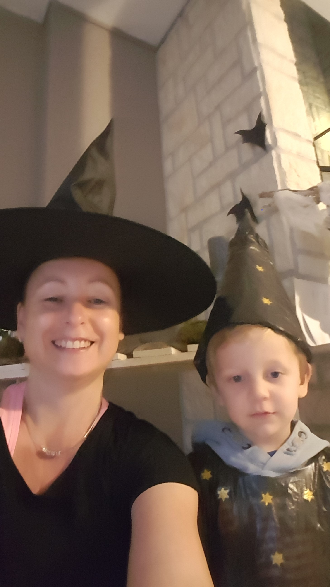
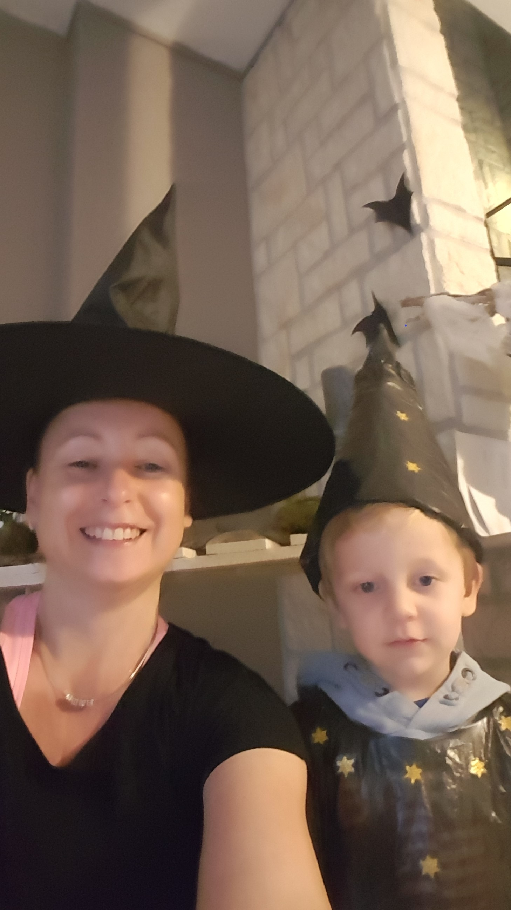

Activiteiten:
In de cribbe wordt regelmatig wel eens een feestje gevierd. Van feestdagen tot verjaardagen.
Dit gaat altijd gepaard met zelfgemaakte knutselwerkjes, meestal een kostuum voor de kindjes die ze mogen houden!
Hieronder is een kleine gallerij met een aantal activeiten zoals Kerstmis en Halloween!


 
